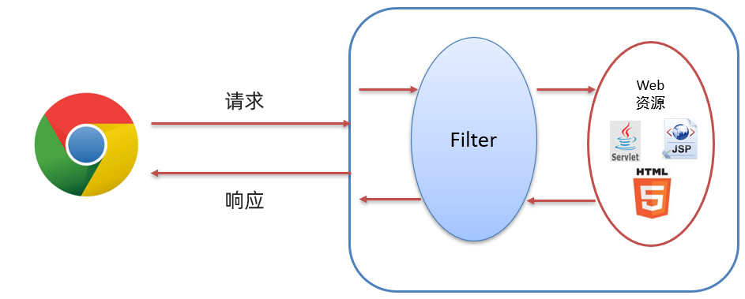

用户登录注册案例完善
学了会话技术，我们完善一下我们之前的用户注册登录案例吧
完善用户登录功能，如果用户勾选“记住用户” ，则下次访问登录页面自动填充用户名密码
完善注册功能，并实现验证码功能
让login.html修改为login.jsp并为复选框设置值，为1则存储cookie
(1)在login.jsp用户名的表单输入框使用value值给表单元素添加默认值，value可以使用${cookie.username.value}
(2)在login.jsp密码的表单输入框使用value值给表单元素添加默认值，value可以使用${cookie.password.value}
<%@ page contentType="text/html;charset=UTF-8" language="java" %>
<!DOCTYPE html>
<html lang="en">
<head>
<meta charset="UTF-8">
<title>login</title>
<link href="css/login.css" rel="stylesheet">
</head>
<body>
<div id="loginDiv" style="height: 350px">
<form action="/brand-demo/loginServlet" method="post" id="form">
<h1 id="loginMsg">LOGIN IN</h1>
<div id="errorMsg">${login_msg}</div>
<p>Username:<input id="username" name="username" value="${cookie.username.value}" type="text"></p>
<p>Password:<input id="password" name="password" value="${cookie.password.value}" type="password"></p>
<p>Remember:<input id="remember" name="remember" value="1" type="checkbox"></p>
<div id="subDiv">
<input type="submit" class="button" value="login up">
<input type="reset" class="button" value="reset">
<a href="register.html">没有账号？</a>
</div>
</form>
</div>
</body>
</html>在LoginServlet获取复选框的值并在登录成功后进行设置Cookie
@WebServlet("/loginServlet")
public class LoginServlet extends HttpServlet {
private UserService service = new UserService();
@Override
protected void doGet(HttpServletRequest request, HttpServletResponse response) throws ServletException, IOException {
//1. 获取用户名和密码
String username = request.getParameter("username");
String password = request.getParameter("password");
//获取复选框数据
String remember = request.getParameter("remember");
//2. 调用service查询
User user = service.login(username, password);
//3. 判断
if(user != null){
//登录成功，跳转到查询所有的BrandServlet
//判断用户是否勾选记住我，字符串写前面是为了避免出现空指针异常
if("1".equals(remember)){
//勾选了，发送Cookie
//1. 创建Cookie对象
Cookie c_username = new Cookie("username",username);
Cookie c_password = new Cookie("password",password);
// 设置Cookie的存活时间
c_username.setMaxAge( 60 * 60 * 24 * 7);
c_password.setMaxAge( 60 * 60 * 24 * 7);
//2. 发送
response.addCookie(c_username);
response.addCookie(c_password);
}
//将登陆成功后的user对象，存储到session
HttpSession session = request.getSession();
session.setAttribute("user",user);
String contextPath = request.getContextPath();
response.sendRedirect(contextPath+"/selectAllServlet");
}else {
// 登录失败,
// 存储错误信息到request
request.setAttribute("login_msg","用户名或密码错误");
// 跳转到login.jsp
request.getRequestDispatcher("/login.jsp").forward(request,response);
}
}
@Override
protected void doPost(HttpServletRequest request, HttpServletResponse response) throws ServletException, IOException {
this.doGet(request, response);
}
}登录成功并勾选了Remeber后，后端返回给前端的Cookie数据就已经存储好了，接下来就需要在页面获取Cookie中的数据，并把数据设置到登录页面的用户名和密码框中。
将register.html内容修改成register.jsp
<%@ page contentType="text/html;charset=UTF-8" language="java" %>
<!DOCTYPE html>
<html lang="en">
<head>
<meta charset="UTF-8">
<title>欢迎注册</title>
<link href="css/register.css" rel="stylesheet">
</head>
<body>
<div class="form-div">
<div class="reg-content">
<h1>欢迎注册</h1>
<span>已有帐号？</span> <a href="login.html">登录</a>
</div>
<form id="reg-form" action="/brand-demo/registerServlet" method="post">
<table>
<tr>
<td>用户名</td>
<td class="inputs">
<input name="username" type="text" id="username">
<br>
<span id="username_err" class="err_msg" >${register_msg}</span>
</td>
</tr>
<tr>
<td>密码</td>
<td class="inputs">
<input name="password" type="password" id="password">
<br>
<span id="password_err" class="err_msg" style="display: none">密码格式有误</span>
</td>
</tr>
<tr>
<td>验证码</td>
<td class="inputs">
<input name="checkCode" type="text" id="checkCode">
<img id="checkCodeImg" src="/brand-demo/checkCodeServlet">
<a href="#" id="changeImg" >看不清？</a>
</td>
</tr>
</table>
<div class="buttons">
<input value="注 册" type="submit" id="reg_btn">
</div>
<br class="clear">
</form>
</div>
<script>
//路径后面添加时间戳的目的是避免浏览器进行缓存静态资源
document.getElementById("changeImg").onclick = function () {
document.getElementById("checkCodeImg").src = "/brand-demo/checkCodeServlet?"+new Date().getMilliseconds();
}
</script>
</body>
</html>验证码生成校验
编写CheckCodeServlet类，用来接收请求生成验证码，并将验证码存入Session对象
@WebServlet("/checkCodeServlet")
public class CheckCodeServlet extends HttpServlet {
@Override
protected void doGet(HttpServletRequest request, HttpServletResponse response) throws ServletException, IOException {
// 生成验证码
ServletOutputStream os = response.getOutputStream();
String checkCode = CheckCodeUtil.outputVerifyImage(100, 50, os, 4);
// 存入Session
HttpSession session = request.getSession();
session.setAttribute("checkCodeGen",checkCode);
}
@Override
protected void doPost(HttpServletRequest request, HttpServletResponse response) throws ServletException, IOException {
this.doGet(request, response);
}
}在RegisterServlet中，获取页面的和session对象中的验证码，进行对比
@WebServlet("/registerServlet")
public class RegisterServlet extends HttpServlet {
private UserService service = new UserService();
@Override
protected void doGet(HttpServletRequest request, HttpServletResponse response) throws ServletException, IOException {
//1. 获取用户名和密码数据
String username = request.getParameter("username");
String password = request.getParameter("password");
User user = new User();
user.setUsername(username);
user.setPassword(password);
// 获取用户输入的验证码
String checkCode = request.getParameter("checkCode");
// 程序生成的验证码，从Session获取
HttpSession session = request.getSession();
String checkCodeGen = (String) session.getAttribute("checkCodeGen");
// 比对
if(!checkCodeGen.equalsIgnoreCase(checkCode)){
request.setAttribute("register_msg","验证码错误");
request.getRequestDispatcher("/register.jsp").forward(request,response);
// 不允许注册
return;
}
//2. 调用service 注册
boolean flag = service.register(user);
//3. 判断注册成功与否
if(flag){
//注册功能，跳转登陆页面
request.setAttribute("register_msg","注册成功，请登录");
request.getRequestDispatcher("/login.jsp").forward(request,response);
}else {
//注册失败，跳转到注册页面
request.setAttribute("register_msg","用户名已存在");
request.getRequestDispatcher("/register.jsp").forward(request,response);
}
}
@Override
protected void doPost(HttpServletRequest request, HttpServletResponse response) throws ServletException, IOException {
this.doGet(request, response);
}
}至此第一步完善到此结束
Filter&Listener&Ajax
Filter
Filter 表示过滤器，是 JavaWeb 三大组件(Servlet、Filter、Listener)之一。过滤器可以把对资源的请求拦截下来，从而实现一些特殊的功能。
在访问资源之前会先经过 Filter
快速入门
进行 Filter 开发分成以下三步实现
- 定义类，实现 Filter接口，并重写其所有方法
- 配置Filter拦截资源的路径：在类上定义
@WebFilter注解。而注解的value属性值/*表示拦截所有的资源 - 在doFilter方法中输出一句话，并放行
代码示例：
@WebFilter("/*")
public class FilterDemo implements Filter {
@Override
public void doFilter(ServletRequest request, ServletResponse response, FilterChain chain) throws IOException, ServletException {
System.out.println("FilterDemo...");
}
@Override
public void init(FilterConfig filterConfig) throws ServletException {
}
@Override
public void destroy() {
}
}
重启启动服务器，再次重新访问 hello.jsp 页面，这次发现页面没有任何效果
但是为什么在浏览器上看不到 hello.jsp 页面的内容呢？这是因为在 doFilter() 方法中添加放行的方法才能访问到 hello.jsp 页面。那就在 doFilter() 方法中添加放行的代码
//放行
chain.doFilter(request,response);Filter执行流程

Filter拦截路径配置
拦截路径有如下四种配置方式：
- 拦截具体的资源：/index.jsp：只有访问index.jsp时才会被拦截
- 目录拦截：/user/*：访问/user下的所有资源，都会被拦截
- 后缀名拦截：*.jsp：访问后缀名为jsp的资源，都会被拦截
- 拦截所有：/*：访问所有资源，都会被拦截
过滤器链
过滤器链是指在一个Web应用，可以配置多个过滤器，这多个过滤器称为过滤器链

上图中的过滤器链执行是按照以下流程执行：
- 执行
Filter1的放行前逻辑代码 - 执行
Filter1的放行代码 - 执行
Filter2的放行前逻辑代码 - 执行
Filter2的放行代码 - 访问到资源
- 执行
Filter2的放行后逻辑代码 - 执行
Filter1的放行后逻辑代码
Listener
Listener 表示监听器，是 JavaWeb 三大组件(Servlet、Filter、Listener)之一，很少用。
监听器可以监听就是在
application，session，request三个对象创建、销毁或者往其中添加修改删除属性时自动执行代码的功能组件。request 和 session 我们学习过。而
application是ServletContext类型的对象。ServletContext代表整个web应用，在服务器启动的时候，tomcat会自动创建该对象。在服务器关闭时会自动销毁该对象。

ServletContextListener 接口中有以下两个方法
void contextInitialized(ServletContextEvent sce)：ServletContext对象被创建了会自动执行的方法void contextDestroyed(ServletContextEvent sce)：ServletContext对象被销毁时会自动执行的方法
AJAX
AJAX (Asynchronous JavaScript And XML)：异步的 JavaScript 和 XML。JavaScript 表明该技术和前端相关；XML 是指以此进行数据交换。
与服务器进行数据交换：通过AJAX可以给服务器发送请求，服务器将数据直接响应回给浏览器。

异步交互：可以在不重新加载整个页面的情况下，与服务器交换数据并更新部分网页的技术，如百度搜索
同步：浏览器页面在发送请求给服务器，在服务器处理请求的过程中，浏览器页面不能做其他的操作。只能等到服务器响应结束后才能，浏览器页面才能继续做其他的操作。
异步：浏览器页面发送请求给服务器，在服务器处理请求的过程中，浏览器页面还可以做其他的操作。
快速入门
服务端实现
在项目的创建 com.itheima.web.servlet ，并在该包下创建名为 AjaxServlet 的servlet
@WebServlet("/ajaxServlet")
public class AjaxServlet extends HttpServlet {
@Override
protected void doGet(HttpServletRequest request, HttpServletResponse response) throws ServletException, IOException {
//1. 响应数据
response.getWriter().write("hello ajax~");
}
@Override
protected void doPost(HttpServletRequest request, HttpServletResponse response) throws ServletException, IOException {
this.doGet(request, response);
}
}客户端实现
在 webapp 下创建名为 ajax-demo1.html 的页面，在该页面书写 ajax 代码
创建核心对象，不同的浏览器创建的对象是不同的
var xhttp; if (window.XMLHttpRequest) { xhttp = new XMLHttpRequest(); } else { // code for IE6, IE5 xhttp = new ActiveXObject("Microsoft.XMLHTTP"); }发送请求
//建立连接 xhttp.open("GET", "http://localhost:8080/ajax-demo/ajaxServlet"); //发送请求 xhttp.send();获取响应
xhttp.onreadystatechange = function() { if (this.readyState == 4 && this.status == 200) { // 通过 this.responseText 可以获取到服务端响应的数据 alert(this.responseText); } };
完整代码如下：
<!DOCTYPE html>
<html lang="en">
<head>
<meta charset="UTF-8">
<title>Title</title>
</head>
<body>
<script>
//1. 创建核心对象
var xhttp;
if (window.XMLHttpRequest) {
xhttp = new XMLHttpRequest();
} else {
// code for IE6, IE5
xhttp = new ActiveXObject("Microsoft.XMLHTTP");
}
//2. 发送请求
xhttp.open("GET", "http://localhost:8080/ajax-demo/ajaxServlet");
xhttp.send();
//3. 获取响应
xhttp.onreadystatechange = function() {
if (this.readyState == 4 && this.status == 200) {
alert(this.responseText);
}
};
</script>
</body>
</html>在浏览器上按 F12 快捷键，可以通过 开发者模式 查看发送的 AJAX 请求。
用户登录注册案例完善
在完成用户注册时，当用户名输入框失去焦点时，校验用户名是否在数据库已存在
例如：

需求分析
- 前端完成的逻辑
- 给用户名输入框绑定光标失去焦点事件
onblur - 发送 ajax请求，携带username参数
- 处理响应：是否显示提示信息
- 给用户名输入框绑定光标失去焦点事件
- 后端完成的逻辑
- 接收用户名
- 调用service查询User。此案例是为了演示前后端异步交互，所以此处我们不做业务逻辑处理
- 返回标记
后端实现
定义名为 SelectUserServlet 的servlet。代码如下：
@WebServlet("/selectUserServlet")
public class SelectUserServlet extends HttpServlet {
@Override
protected void doGet(HttpServletRequest request, HttpServletResponse response) throws ServletException, IOException {
//1. 接收用户名
String username = request.getParameter("username");
//2. 调用service查询User对象，此处不进行业务逻辑处理，直接给 flag 赋值为 true，表明用户名占用
boolean flag = true;
//3. 响应标记
response.getWriter().write("" + flag);
}
@Override
protected void doPost(HttpServletRequest request, HttpServletResponse response) throws ServletException, IOException {
this.doGet(request, response);
}
}前端实现
前端完成代码如下：
//1. 给用户名输入框绑定 失去焦点事件
document.getElementById("username").onblur = function () {
//2. 发送ajax请求
// 获取用户名的值
var username = this.value;
//2.1. 创建核心对象
var xhttp;
if (window.XMLHttpRequest) {
xhttp = new XMLHttpRequest();
} else {
// code for IE6, IE5
xhttp = new ActiveXObject("Microsoft.XMLHTTP");
}
//2.2. 发送请求
xhttp.open("GET", "http://localhost:8080/ajax-demo/selectUserServlet?username="+username);
xhttp.send();
//2.3. 获取响应
xhttp.onreadystatechange = function() {
if (this.readyState == 4 && this.status == 200) {
//alert(this.responseText);
//判断
if(this.responseText == "true"){
//用户名存在，显示提示信息
document.getElementById("username_err").style.display = '';
}else {
//用户名不存在 ，清楚提示信息
document.getElementById("username_err").style.display = 'none';
}
}
};
}完善完成
axios
Axios 对原生的AJAX进行封装，简化书写。
axios 使用是比较简单的，分为以下两步：
引入 axios 的 js 文件
<script src="js/axios-0.18.0.js"></script>使用axios 发送请求，并获取响应结果
发送 get 请求
axios({ method:"get", url:"http://localhost:8080/ajax-demo1/aJAXDemo1?username=zhangsan" }).then(function (resp){ alert(resp.data); })发送 post 请求
axios({ method:"post", url:"http://localhost:8080/ajax-demo1/aJAXDemo1", data:"username=zhangsan" }).then(function (resp){ alert(resp.data); });
axios() 是用来发送异步请求的，小括号中使用 js 对象传递请求相关的参数：
method属性：用来设置请求方式的。取值为get或者post。url属性：用来书写请求的资源路径。如果是get请求，需要将请求参数拼接到路径的后面，格式为：url?参数名=参数值&参数名2=参数值2。data属性：作为请求体被发送的数据。也就是说如果是post请求的话，数据需要作为data属性的值。
then() 需要传递一个匿名函数。我们将 then() 中传递的匿名函数称为 ==回调函数==，意思是该匿名函数在发送请求时不会被调用，而是在成功响应后调用的函数。而该回调函数中的 resp 参数是对响应的数据进行封装的对象，通过 resp.data 可以获取到响应的数据。
快速入门：
后端实现
@WebServlet("/axiosServlet")
public class AxiosServlet extends HttpServlet {
@Override
protected void doGet(HttpServletRequest request, HttpServletResponse response) throws ServletException, IOException {
System.out.println("get...");
//1. 接收请求参数
String username = request.getParameter("username");
System.out.println(username);
//2. 响应数据
response.getWriter().write("hello Axios~");
}
@Override
protected void doPost(HttpServletRequest request, HttpServletResponse response) throws ServletException, IOException {
System.out.println("post...");
this.doGet(request, response);
}
}前端实现
<!DOCTYPE html>
<html lang="en">
<head>
<meta charset="UTF-8">
<title>Title</title>
</head>
<body>
<script src="js/axios-0.18.0.js"></script>
<script>
//1. get
/* axios({
method:"get",
url:"http://localhost:8080/ajax-demo/axiosServlet?username=zhangsan"
}).then(function (resp) {
alert(resp.data);
})*/
//2. post 在js中{} 表示一个js对象，而这个js对象中有三个属性
axios({
method:"post",
url:"http://localhost:8080/ajax-demo/axiosServlet",
data:"username=zhangsan"
}).then(function (resp) {
alert(resp.data);
})
</script>
</body>
</html>请求方法别名
为了方便起见， Axios 已经为所有支持的请求方法提供了别名。如下：
get请求 ：axios.get(url[,config])delete请求 ：axios.delete(url[,config])head请求 ：axios.head(url[,config])options请求 ：axios.option(url[,config])post请求：axios.post(url[,data[,config])put请求：axios.put(url[,data[,config])patch请求：axios.patch(url[,data[,config])
而我们只关注 get 请求和 post 请求。
入门案例中的 get 请求代码可以改为如下：
axios.get("http://localhost:8080/ajax-demo/axiosServlet?username=zhangsan").then(function (resp) {
alert(resp.data);
});入门案例中的 post 请求代码可以改为如下：
axios.post("http://localhost:8080/ajax-demo/axiosServlet","username=zhangsan").then(function (resp) {
alert(resp.data);
})Fastjson 概述
Fastjson 是阿里巴巴提供的一个Java语言编写的高性能功能完善的 JSON 库，是目前Java语言中最快的 JSON 库，可以实现 Java 对象和 JSON 字符串的相互转换。
Fastjson 使用
Fastjson 使用也是比较简单的，分为以下三步完成
导入坐标
<dependency> <groupId>com.alibaba</groupId> <artifactId>fastjson</artifactId> <version>1.2.62</version> </dependency>Java对象转JSON
String jsonStr = JSON.toJSONString(obj);将 Java 对象转换为 JSON 串，只需要使用
Fastjson提供的JSON类中的toJSONString()静态方法即可。JSON字符串转Java对象
User user = JSON.parseObject(jsonStr, User.class);将 json 转换为 Java 对象，只需要使用
Fastjson提供的JSON类中的parseObject()静态方法即可。
代码演示
- 代码如下：
public class FastJsonDemo {
public static void main(String[] args) {
//1. 将Java对象转为JSON字符串
User user = new User();
user.setId(1);
user.setUsername("zhangsan");
user.setPassword("123");
String jsonString = JSON.toJSONString(user);
System.out.println(jsonString);//{"id":1,"password":"123","username":"zhangsan"}
//2. 将JSON字符串转为Java对象
User u = JSON.parseObject("{\"id\":1,\"password\":\"123\",\"username\":\"zhangsan\"}", User.class);
System.out.println(u);
}
}